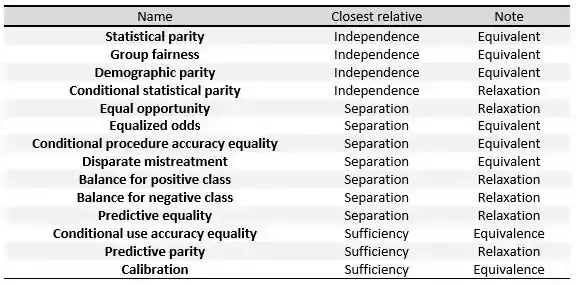

The impossibility results
Kleinberg, Mullainathan and Raghavan, and independently Chouldechova, showed that when groups have different base rates, a predictor cannot simultaneously satisfy calibration within groups, equal false positive rates and equal false negative rates.
Maps, diagrams and images


The three properties are each individually compelling. Calibration says a score of 0.7 means a 70 per cent chance for everyone. Equal false positive rates say innocent people are wrongly flagged at the same rate in each group. Equal false negative rates say the same for missed cases. Pick two.
Hardt, Price and Srebro's equalised odds framework made the trade-off explicit and computable: you can adjust a classifier's thresholds post hoc to equalise error rates, at a cost in overall accuracy.
The COMPAS case
ProPublica's 2016 analysis of the COMPAS recidivism tool found that Black defendants were more likely than white defendants to be falsely flagged as high risk, and white defendants more likely to be falsely cleared.
Northpointe, the vendor, replied that the tool was calibrated: among defendants with the same score, the reoffending rate was similar across groups. Both analyses were correct, which is exactly the theorem.
The case is the canonical illustration because it shows that the dispute was never about arithmetic. It was about which error is worse, and that is a normative question the data cannot answer.
The impossibility is proven under stated assumptions, and it is not a limitation of current methods — it follows from the statistics.
Choosing a definition is a policy decision, and it should be made by the institution accountable for the harm, not left to the vendor's default.
Measurement matters: the label a model predicts is often a proxy — arrests rather than crimes — and the proxy's bias is upstream of any fairness constraint.
No definition is neutral. Demographic parity ignores base rates; calibration can entrench them. Each encodes a view about what equal treatment means.
The archive labels this live debate because the mathematics is settled and the ethics and law are not.
Why it is in the archive
Because it is a case where a rigorous result killed a naive hope — that there is a technical fix for a political problem — and the field has mostly absorbed that honestly.
Related: open versus closed models, echo chambers.
Sources for this page
- Wikipedia, “Fairness (machine learning)” — the definitions and the impossibility resultsen.wikipedia.org
- Kleinberg, Mullainathan & Raghavan (2016), “Inherent Trade-Offs in the Fair Determination of Risk Scores”arxiv.org
- Chouldechova (2017), “Fair prediction with disparate impact”doi.org
- ProPublica (2016), “Machine Bias” — the COMPAS investigationwww.propublica.org
Open resources on this topic
- BookFramework for developing algorithmic fairness — Bulletin of Electrical Engineering and Informatics · 2020 (Internet Archive, free to read)
- BookERIC ED630849: Is Your Model "MADD"? A Novel Metric to Evaluate Algorithmic Fairness for Predictive Student Mo — ERIC · 2023 (Internet Archive, free to read)
- PapersOpen-access articles: DOAJ · PubMed Central · Internet Archive Scholar
- BooksPublic-domain and borrowable copies: Open Library · Project Gutenberg · Google Books
More images
Cite this page
Momin, S. (2026). Algorithmic Fairness. The Larger World Archive. https://drsamonline.github.io/LARGE_GLOBE/algorithmic-fairness.htmlMomin, Sohil. “Algorithmic Fairness.” The Larger World Archive, 2026, https://drsamonline.github.io/LARGE_GLOBE/algorithmic-fairness.html.Momin, Sohil. “Algorithmic Fairness.” The Larger World Archive, 2026. https://drsamonline.github.io/LARGE_GLOBE/algorithmic-fairness.html.@misc{algorithmic2026algorithmic,
author = {Momin, Sohil},
title = {Algorithmic Fairness},
year = {2026},
howpublished = {The Larger World Archive},
url = {https://drsamonline.github.io/LARGE_GLOBE/algorithmic-fairness.html},
note = {Last reviewed 20 November 2026}
}Last reviewed 20 November 2026 · Corrections policy · this page is not peer reviewed